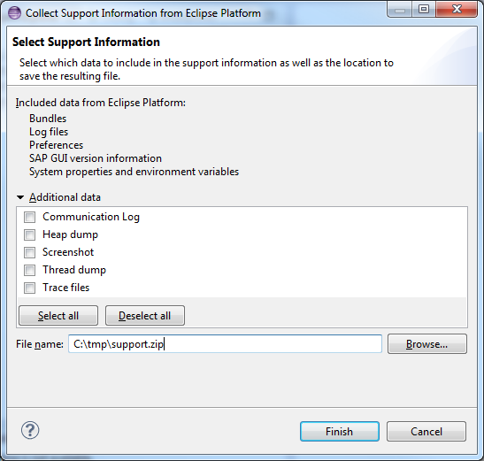
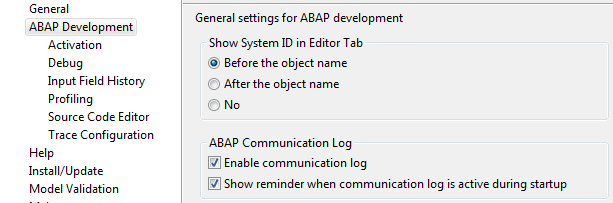

In rare cases it can happen that for detailed troubleshooting some additional information is required. You can then use the Support Information Collector utility to generate an extended support file version.

Figure: Selection of additional support data in case ABAP Development Tools is installed
| Additional Support Data | Meaning |
| Communication Log |
The ABAP communication log collects the data on the RFC communication between the IDE client and the ABAP back-end system.
You may need to provide this type of additional information if RFC communication issues are suspected as causing the problem reported. PREREQUISITES: To enable the communication log (in case ABAP Development Tools is installed), you have to switch on the corresponding setting in the preferences: ABAP Development > Enable communication log  NOTE: The collector does not write out the passwords used for communication with the back-end system. Passwords are anonymized in the generated support file. |
| Heap Dump | Includes the heap dump data collection, which SAP support may use to analyze suspected memory issues.
CAUTION: (1) Keep in mind that you might generate very large amounts of data using this option and thus create a large support file. (2) Keep in mind that when creating a heap dump any data currently stored in memory is included in the support file. This may also include passwords that are buffered locally. |
| Screenshot | Creates a screenshot file of your entire desktop in.PNG format. |
| Thread Dump | Collects all Java threads that can be used to analyze deadlock situations. |
NOTE: The list of additional support data may be extended by additional extensions that are used to generate further support information.
The Support Information Collector utility creates an extended set of files and stores the ZIP file on the specified location on your local drive.